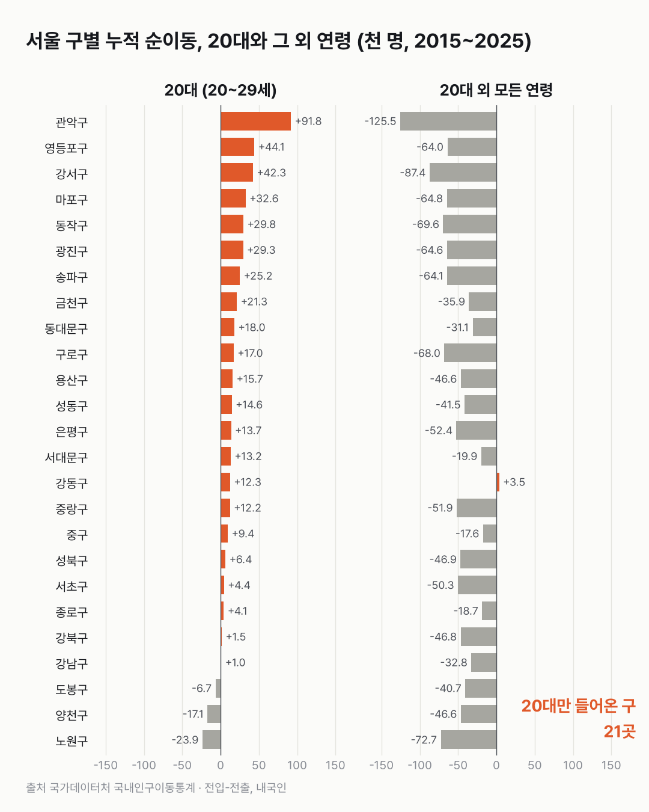

서울 구 대부분, 20대만 들어오고 다른 나이는 나갔어요
서울 대부분의 구에서 20대만 들어오고 다른 나이는 빠져나갔어요. 모든 나이가 함께 들어온 곳은 강동구 하나였어요.

- 2015~2025년 서울은 나간 사람이 84만 5천 명 더 많았어요. 20대는 들어온 사람이 41만 2천 명 더 많았어요.
- 25개 구 중 21곳이 '20대는 더 들어오고, 다른 나이는 더 나간' 곳이에요.
- 가장 뚜렷한 곳은 관악구예요. 20대가 9만 2천 명 더 들어왔고, 다른 나이는 12만 5천 명 더 나갔어요.
이 글의 '이동'은 전입신고를 센 거예요. 같은 사람이 두 번 옮기면 두 번 잡히고, 주소를 그대로 둔 채 사는 사람은 잡히지 않아요. 그리고 '20대 외'에는 0~19세와 30세 이상이 한데 묶여 있어요.
그렇게 세어 보니 11년 동안 서울 전체 순이동은 −84만 5천 명이었어요. 20대는 +41만 2천 명, 20대 외 연령은 −125만 7천 명이에요.
25개 구 중 21곳이 같은 모양이에요. 관악구가 가장 크게 벌어졌어요. 20대는 9만 2천 명이 더 들어왔고, 20대 외 연령은 12만 5천 명이 더 나갔어요.
예외는 강동구예요. 20대(+1만 2천 명)도, 20대 외 연령(+3천 5백 명)도 순유입인 곳은 강동구뿐이에요. 연도별로 보면 2019~2020년과 2024~2025년엔 0~9세부터 60세 이상까지 모든 연령대가 함께 들어왔고, 2015~2018년엔 모든 연령대가 함께 나갔어요. 구 전체가 한꺼번에 움직였어요.
노원·양천·도봉은 반대로 모든 나이가 나갔어요. 이 세 구는 11년 중 20대가 순유입이었던 해가 한 번도 없어요.
마포구는 '20대만' 모양이 가장 또렷한 곳이에요. 11년 내내 20대는 순유입, 30대 이상과 0~9세는 순유출이었어요. 다만 20대 유입 폭은 2018년 +3,968명에서 2025년 +1,813명으로 줄었어요.
'20대 외'를 하나로 묶은 탓에 30대 가족이 어디로 가는지는 가려졌어요. 마포에 들어온 20대가 30대가 되면 어느 칸으로 옮겨 가는지, 따로 세어 보고 싶어졌어요.
이 숫자는 어디서 왔나요
출처
| 데이터 | 출처 | 쓰임 |
|---|---|---|
| 서울특별시 시군구 각세별 이동자수 (KOSIS DT_1B26B02) | 국가데이터처 「국내인구이동통계」 | 연령별 전입·전출·순이동 |
- 수집일: 2026-10-27 (KOSIS 오픈API)
- 계산: 구별로 2015~2025년 11년간 순이동(전입 − 전출)을 더함. "20대 외"는 전체 연령 순이동에서 20~29세를 뺀 값(0~19세, 30세 이상).
- 검증: 11개 연도 모두 25개 구 합계 = 서울 전체 (차이 0명).
기준일
2015년 1월 1일 ~ 2025년 12월 31일 전입신고 기준
한계 6가지
이 데이터로 말할 수 없는 것
- 주민등록 신고 기준. 실제 거주 이동과 다를 수 있다. 특히 20대는 주소를 옮기지 않고 사는 경우가 있다.
- 인원 기준이다. 구마다 인구 규모가 달라 인원만으로 구를 비교하면 큰 구가 두드러진다. 20대 외 연령의 인구 대비 비율은 이번에 계산하지 않았다.
- "20대 외"는 넓은 묶음이다. 0~19세와 30세 이상을 합쳐서, 그 안의 연령대별 차이(예: 30대 가족 이동)는 가려진다.
- 누적값은 시기 변화를 가린다. 강동구처럼 순유출에서 순유입으로 바뀐 구는 누적값만 보면 변화가 보이지 않는다.
- 같은 사람이 여러 번 셀 수 있다. 이동은 사람 수가 아니라 신고 건수 기준이다.
- 원인은 말하지 않는다. 대학, 일자리, 집값, 대규모 입주 등과의 관계는 이 데이터로 확인할 수 없다. 강동구의 연령 전체 유입 시기가 특정 주택 공급 시기와 겹치는지는 별도 자료로 확인해야 한다.
전제 기록
데이터를 보기 전에 적어둔 것, 그리고 보고 나서 바꾼 것
- 기간 2015~2025년은 첫 글의 비교 기간과 맞춤 (결과 보기 전 결정).
- 유형 구분 기준(20대 누적 부호 × 20대 외 누적 부호)은 결과를 본 뒤에 정했다. 강동구와 마포구 연도별 표를 보고 "함께 움직이는 구 / 20대만 움직이는 구"라는 질문이 생겼기 때문이다. 탐색 중에 생긴 질문임을 밝혀 둔다.
질문
20대가 많이 들어오는 동네라면 다른 나이도 함께 들어올까요? 서울 25개 자치구의 11년 치 이동을 나이별로 나눠 봤어요.
새 글 나오면 받아 보기
지금은 RSS로 받을 수 있어요. 메일은 아직 준비 중이에요.